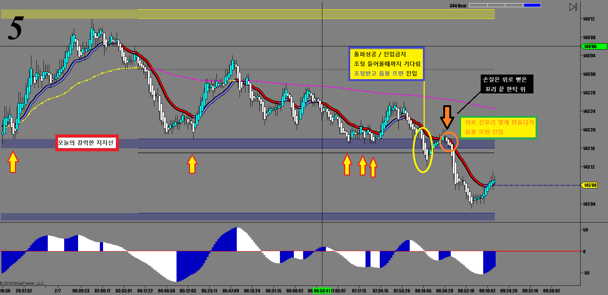

이 매매방법은 장중에서 매수세와 매도세의 힘겨루기 중 발생하는 돌파일 경우에 해당되는 상황이고, 경제지표 발표나 장세에 큰 영향을 미칠만한 큰 뉴스가 터져서 급락 급등할 때는 적용할 수 없다.
재료로 폭락 폭등때는 무조건 끼어들어가야 한다.
장중에 가격이 움직이다가 어느 지점에서 여러번 부딪치는데 돌파를 못하고 계속해서 뒤로 밀렸다가 다시 시도하고 하는 강력한 지지/저항포인트가 있다.
항상 그날의 고점 저점등을 추세선으로 그어가면서 오늘의 지지/저항을 찾는것이 매우 중요하다.
이런 포인트에서 여러번 시도하다 결국은 돌파할 때 매매하는 방법이다.
바로 따라들어가도 되지만 아주 중요한 지지/저항인 경우 적폐의 반격이 항상 뒤따른다.
잘못하면 들어가자마자 손절에 걸린다.
일단은 기다려서 첫번째 눌림목 나올 때 들어가는게 정석이다.
